library(mvtnorm) # to use the multivariate normal distribution rmvnorm and its cumulative distribution pmvnorm
# make sure to load tidyverse after MASS so that the select function comes from dplyr
library(tidyverse)
library(psych) # for the pairs.panels and phi2tetra functions
library(Matrix) # to use the nearPD function
library(patchwork) # to display plots side by side
library(latex2exp) # to use scientific notation on plots
options(java.parameters = c("-XX:+UseConcMarkSweepGC", "-Xmx32g"))
gc()
theme_set(theme_classic()) # sets the ggplot theme for the session
options(scipen = 999) # so that numbers don't display with the exponent
options(dplyr.summarise.inform = FALSE) # to suppress annoying grouping warningIn a previous post, I showed how we can use some marginal distributions (e.g. separate media measurements) and link them with a correlation matrix to derive an estimate of combined reach using a Gaussian copula. This was done by creating a simulation of 100k data points from the Gaussian copula and by mapping the resulting Normal margins to the observed margins using their quantiles. Then we can simply analyse results based on that simulated dataset and get cross media reach for any time spent threshold, as well as the solus reach from each media.
In this post I will show how we can also do this without simulating a dataset, just by using the multivariate Normal cumulative distribution. As it doesn’t have a closed form solution, we will use the convenient pmvnorm function from the mvtnorm package to estimate the probability \(P(X_1 \in [l_1, u_1], ... , X_n \in [l_n, u_n])\). This function implements the methodology described in (Genz 1992).
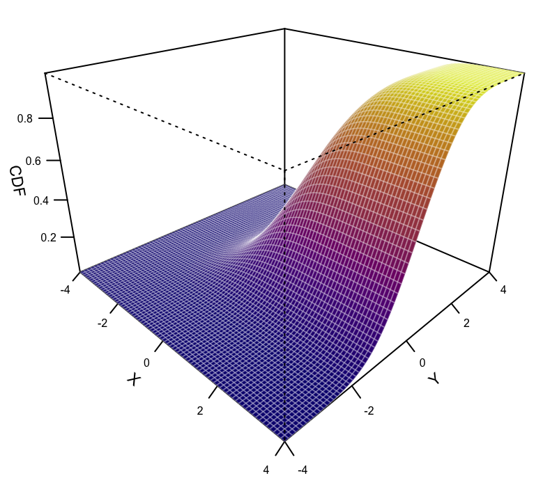
First I will show how to use the quantile distribution in the univariate case, then the bivariate case using a simulated dataset, and finally using the Bacon and Eggs dataset.
1 simulated univariate example
In this previous post, we turned a multivariate continuous simulation into discrete values. To get the probability that our multivariate distribution is in a specific region, for example \(P(X_1 = 0, ... , X_n = 0)\), we then used the results from the simulated transformed dataset, but this can also be done using the quantiles of the cumulative continuous distribution.
In this section we will take the simple example of one variable to demonstrate how we map the values from a random sample from \(N(0,1)\) onto any observed discrete distribution. Then we will show how to correctly set the bounds of a region of interest with discrete values.
Let’s start with a random sample from a Poisson distribution. We will: - derive their observed cumulative distribution,
- create a simple univariate normal simulation and
- transform it by mapping its continuous values to the observed quantiles in exactly the same way as before.
Note that when we simulate a cross-media dataset from currencies we will not have an observed full dataset, just some observed margins from separate datasets and an empirical correlation matrix from a separate study. The steps described below with the univariate case will seem overly complicated but their only purpose is to illustrate how to correctly set the bounds of the cumulative distribution. When we move to the multivariate case, this will help to understand how to correctly define the marginal regions of the cumulative multivariate normal distribution.
First, we create a simulated dataset using a Poisson with parameter \(\lambda = 2\), this will be our “observed” dataset:
set.seed(4)
sample_size <- 10000
lambda <- 2
db <- data.frame(
id = 1:sample_size,
name = "x",
value = rpois(n = sample_size, lambda = lambda)
)
summary(db) id name value
Min. : 1 Length:10000 Min. :0.000
1st Qu.: 2501 Class :character 1st Qu.:1.000
Median : 5000 Mode :character Median :2.000
Mean : 5000 Mean :1.993
3rd Qu.: 7500 3rd Qu.:3.000
Max. :10000 Max. :8.000 Calculate its distribution and cumulative distribution:
actual_distr <- db %>%
count(value) %>%
mutate(
pc = n / sample_size,
cumpc = cumsum(pc)
)
head(actual_distr) value n pc cumpc
1 0 1367 0.1367 0.1367
2 1 2690 0.2690 0.4057
3 2 2702 0.2702 0.6759
4 3 1842 0.1842 0.8601
5 4 897 0.0897 0.9498
6 5 349 0.0349 0.9847Plot its observed frequency and cumulative distributions:
p1 <- actual_distr %>%
ggplot(aes(x = value, y = pc)) +
geom_bar(stat="identity", fill="slateblue") +
scale_x_continuous(breaks = 0:8) +
scale_y_continuous(labels = scales::percent) +
geom_text(vjust = -0.2, size=3, aes(label=scales::percent(pc, accuracy = 1))) +
labs(title = "P(X = k): observed frequencies")
p2 <- actual_distr %>%
ggplot(aes(x = value, y = cumpc)) +
geom_bar(stat="identity", fill="thistle") +
scale_x_continuous(breaks = 0:8) +
scale_y_continuous(labels = scales::percent) +
geom_text(vjust = -0.2, size=3, aes(label=scales::percent(cumpc, accuracy = 1))) +
labs(title = "F(X): cumulative distribution")
p1 + p2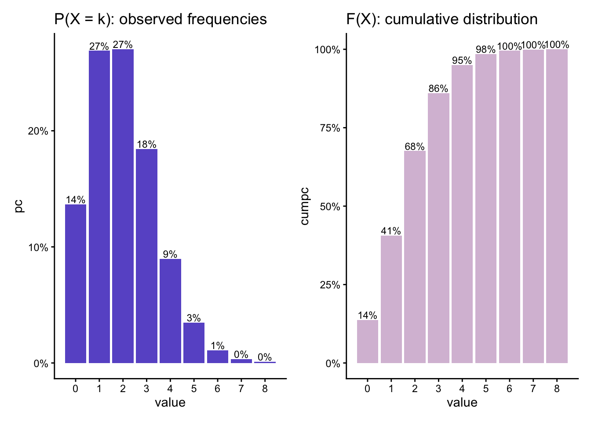
Each bar on the cumulative distribution on the right shows the observed probability that our variable is below a specified value, for example \(F(X=1) = P(X \leq 1) = P(X=0) + P(X=1)\)
Now, as we would do in the multivariate case where we recreate a simulated dataset using just the margins and a correlation matrix, here in the univariate case we start by creating a simulation from a \(N(0,1)\):
simdata <- data.frame(value = rnorm(n = sample_size))
summary(simdata) value
Min. :-4.270416
1st Qu.:-0.684944
Median :-0.003042
Mean :-0.009446
3rd Qu.: 0.671714
Max. : 4.049513 The mapping process:
Given an observed cumulative distribution \(F(X)\), we map the \(p_k = F(X = k)\) to the \(N(0,1)\) cumulative distribution:
# extend observed cumulative distribution so that F(X) starts at zero:
x <- c(-1, actual_distr$value)
y <- c(0, actual_distr$cumpc)
# observed cumulative distribution:
p1 <- data.frame(x, y) %>%
ggplot(aes(x = x, y = y)) +
geom_step(col = "hotpink") +
expand_limits(y = 0) +
geom_vline(xintercept = 8, col = "lightgray") +
geom_hline(yintercept = 1, col = "lightgray") +
geom_hline(yintercept = actual_distr$cumpc, col = "lightgray", linetype = "dashed") +
scale_y_continuous(breaks = actual_distr$cumpc[1:6]) +
labs(
title = "Target: discrete cumulative distribution",
x = TeX("$x = F^{-1}(p)$"),
y = TeX("$p=F(X)$")
) +
theme(plot.title = element_text(size=10))
# cumulative distribution of our simulated N(0,1) :
p2 <- simdata %>%
mutate(rounded_value = round(value, digits = 2)) %>%
count(rounded_value) %>%
mutate(
pc = n / sample_size,
cumpc = cumsum(pc)
) %>%
ggplot(aes(x = rounded_value, y = cumpc)) +
geom_line(col = "hotpink") +
geom_vline(xintercept = 3, col = "lightgray") +
geom_hline(yintercept = 1, col = "lightgray") +
geom_hline(yintercept = actual_distr$cumpc, col = "lightgray", linetype = "dashed") +
scale_y_continuous(breaks = actual_distr$cumpc[1:6]) +
labs(
title = "Simulation: N(0,1) cumulative distribution",
x = TeX("$z = \\Phi^{-1}(p)$"),
y = TeX("$p=\\Phi(Z)$")
) +
theme(plot.title = element_text(size=10))
p1 + p2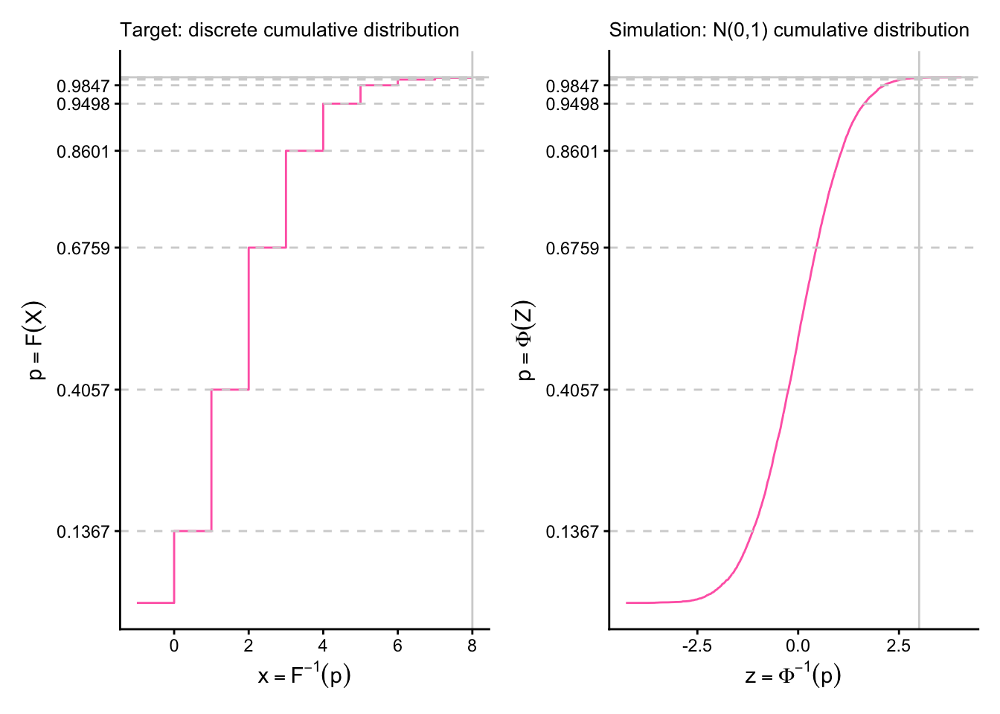
For example we see that on the left hand side, the first value corresponding to \(P(X = 0)\) is \(p = F(X) = 0.1367\), i.e. 13.67% of the observed dataset has the value 0. This is our first critical value: in our simulated dataset on the right, we have to find the value of \(z\) such that \(p = \Phi(Z)) = 0.1367\). To do this we use the quantile function which is the inverse of the cumulative distribution function, i.e. for a given cumulative percentage on the y axis, the quantile function gives the corresponding value on the x axis.
quantile(simdata$value, probs = 0.1367) 13.67%
-1.119935 so any data point below this threshold in our simulated dataset will be assigned the value of zero: this way, 13.67% of our mapped dataset will be zero, just like in our observed dataset.
The second step on the right hand side corresponding to \(P(X \leq 1)\) is \(p = F(X) = 0.4057\).
In our simulated dataset, we have to find the value of \(z\) such that \(p = \Phi(Z)) = 0.4057\):
quantile(simdata$value, probs = 0.4057) 40.57%
-0.2364882 so any data point between the 1st and 2nd threshold in our simulated dataset will be assigned the value of 1, etc until we’ve exhausted all possible values of X.
The full list of thresholds that we have to apply to the simulated \(N(0,1)\) is given by:
quantile(simdata$value, actual_distr$cumpc) 13.67% 40.57% 67.59% 86.01% 94.98% 98.47% 99.56%
-1.1199352 -0.2364882 0.4550850 1.0847586 1.6398703 2.1387512 2.5406376
99.89% 100%
3.0142916 4.0495128 (Note that we use the quantile function rather than pnorm because we are working with a dataset rather than the underlying distribution.)
Now we map the cumulative distributions of this simulated \(N(0,1)\) to the observed cumulative distributions:
# make copy so we can replace each column with their corrected values:
s <- simdata$value
# Find the critical values so we can map the simulated values to these probabilities:
crv <- c(-Inf, quantile(s, actual_distr$cumpc))
# Cut the simulated normal data according to the breaks given by the crv table:
temp <- cut(
s,
right = FALSE,
include.lowest = FALSE,
breaks = crv,
labels = actual_distr$value
)
summary(temp) 0 1 2 3 4 5 6 7 8 NA's
1367 2690 2702 1842 897 349 109 33 10 1 Note that one value is NA which is caused by the rounding of the last critical value. We will have to assign it to the maximum observed value.
# Convert the levels back to numeric values:
sim_temp <-
data.frame(value = as.numeric(as.character(temp)))
# if by bad luck we have an NA, this may be to do with rounding of the crv...
# => replace with the max value:
sim_temp[is.na(sim_temp)] <- max(actual_distr$value, na.rm = TRUE)
# transform these levels back into our values:
sim_db <- data.frame(
id = 1:sample_size,
value = sim_temp$value
)
sim_db %>%
count(value) value n
1 0 1367
2 1 2690
3 2 2702
4 3 1842
5 4 897
6 5 349
7 6 109
8 7 33
9 8 11Compare actual and simulated distributions:
sim_distr <- sim_db %>%
count(value) %>%
mutate(
pc = n / sample_size,
cumpc = cumsum(pc)
)
rbind(
actual_distr %>%
mutate(source = "actual"),
sim_distr %>%
mutate(source = "sim")
) %>%
ggplot(aes(x = value, y = pc, fill = source)) +
geom_bar(stat="identity", position = "dodge") +
scale_fill_manual(values = c("slateblue", "lightpink")) +
scale_x_continuous(breaks = 0:8) +
scale_y_continuous(labels = scales::percent) +
geom_text(
aes(label=scales::percent(pc, accuracy = 1), fill = source),
position = position_dodge(width = 0.8),
vjust = -0.2, size = 2.5) +
labs(title = "observed vs simulated frequencies") +
theme(legend.position = "bottom")Warning in geom_text(aes(label = scales::percent(pc, accuracy = 1), fill =
source), : Ignoring unknown aesthetics: fill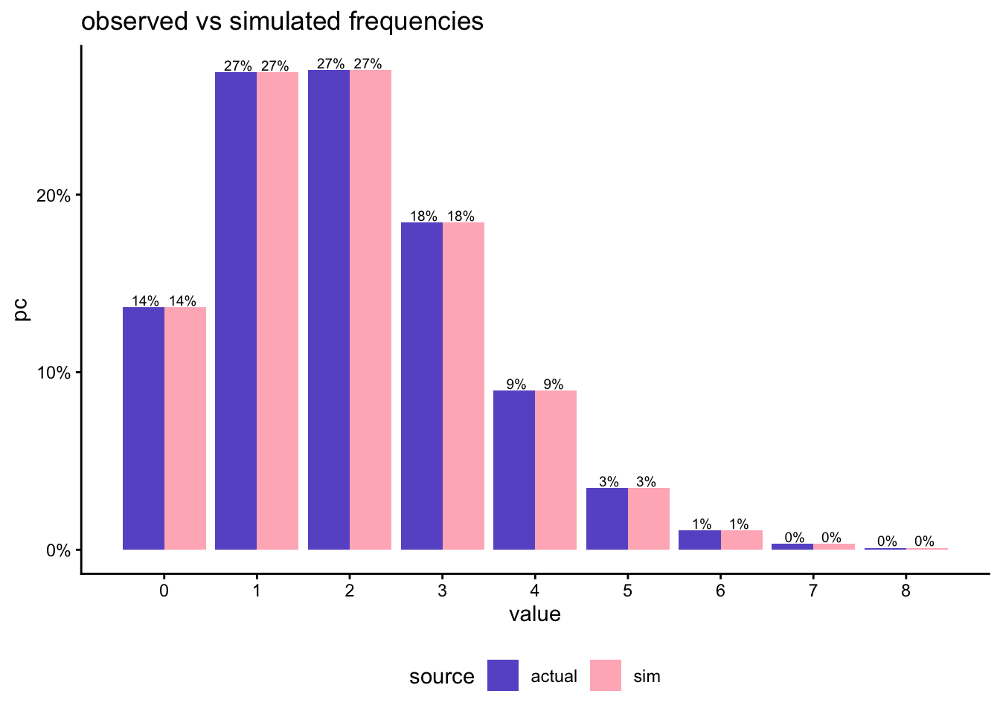
=> as expected the observed and simulated frequencies are a perfect match.
Now say we want to calculate the probability that \(X \in [1,2]\):
actual_distr %>%
mutate(lead_value = lead(value)) %>%
select(value, lead_value, pc, cumpc) %>%
head() value lead_value pc cumpc
1 0 1 0.1367 0.1367
2 1 2 0.2690 0.4057
3 2 3 0.2702 0.6759
4 3 4 0.1842 0.8601
5 4 5 0.0897 0.9498
6 5 6 0.0349 0.9847Looking at the observed cumulative distribution \(F(X)\), this would be the area corresponding to \(\text{cumpc} \leq 0.676\) minus \(\text{cumpc} \leq 0.137\):
\[P(X \in [1,2]) = P(X\leq 2) - P(X=0) = F(X=2) - F(X=0)\] Let’s write the thresholds for \(X\):
thresholds <- data.frame(
name = "x",
lower_value = 1,
upper_value = 2
)
thresholds name lower_value upper_value
1 x 1 2I added the lead value to show that this \([1,2]\) region corresponds to the interval between the lead_value = 1 and the value = 2, see in the filter step below:
# find the observed cumulative % corresponding to the lower and upper values:
quantile_bounds <- actual_distr %>%
mutate(name = "x") %>%
mutate(lead_value = lead(value)) %>%
inner_join(
thresholds,
by = "name"
) %>%
filter(
# we need the x value of the actual_distr that is just before the x value
# corresponding to the lower_value:
lead_value >= lower_value,
value <= upper_value
) %>%
group_by(name, lower_value, upper_value) %>%
summarise(
lower_cumpc = min(cumpc),
upper_cumpc = max(cumpc)
) %>%
mutate(
lower_cumpc = ifelse(lower_value <= 0, 0, lower_cumpc)
)
quantile_bounds# A tibble: 1 × 5
# Groups: name, lower_value [1]
name lower_value upper_value lower_cumpc upper_cumpc
<chr> <dbl> <dbl> <dbl> <dbl>
1 x 1 2 0.137 0.676In the univariate case, the answer is simply the difference between upper_cumpc and lower_cumpc, ie \(P(X \in [1,2]) = 53.9\%\). When we move to the multivariate case this step will give us the required lower and upper bounds of the cumulative distribution of each observed discrete margin, and it will then make use of the correlation to estimate the corresponding cumulative multivariate distribution.
2 simulated multivariate example
To illustrate the multivariate case, we create a bivariate discrete dataset with a specified correlation. We start by creating a bivariate Normal with the given correlation, then we arbitrarily map the margins to discrete values:
set.seed(13)
my_corr <- 0.8
my_corr_mat <- matrix(
data = c(1, my_corr, my_corr, 1),
nrow = 2,
byrow = TRUE
)
# create simulated MVN with that correlation:
my_mvn <- rmvnorm(
n = sample_size,
mean = rep(0, 2),
sigma = my_corr_mat
) %>%
as.data.frame()
colnames(my_mvn) <- c("x1", "x2")
head(my_mvn) x1 x2
1 0.3704637 -0.00278030
2 1.6715265 0.96142140
3 1.2077354 0.88261110
4 1.2055505 0.76154478
5 0.1674273 0.82506694
6 -0.7715852 -0.07596019Let’s use the following margins to get 2 discrete variables with values between 0 and 5:
# to get plausible margins, i'm looking at the frequencies from a binomial distribution
# with 5 trials (size) and a given probability of success p,
# so the possible set of values x (number of successes) is between 0 and 5:
margins <- rbind(
# roughly dbinom(x = 0:5, size = 5, prob = 0.45):
data.frame(
name = "x1",
value = 0:5,
pc = c(0.05, 0.2, 0.3, 0.25, 0.15, 0.05)
) %>%
mutate(cumpc = cumsum(pc)),
# roughly dbinom(x = 0:5, size = 5, prob = 0.25):
data.frame(
name = "x2",
value = 0:5,
pc = c(0.23, 0.38, 0.23, 0.1, 0.05, 0.01)
) %>%
mutate(cumpc = cumsum(pc))
)
# check we add back to 1 by looking at
# the cumulative distribution at the maximum x value:
margins %>%
filter(value == 5) name value pc cumpc
1 x1 5 0.05 1
2 x2 5 0.01 1Transform the simulated MVN so they have these discrete margins:
# make copy so we can replace each column with their corrected values:
my_mvn_copy <- my_mvn
names <- names(my_mvn)
for (i in 1:length(names)) {
s <- my_mvn[, i]
actual_var_distr <- margins %>%
filter(name == names[i])
# Find the critical values so we can map the simulated values to these probabilities:
crv = as.vector(c(min(s), quantile(s, actual_var_distr$cumpc)))
# Cut the simulated normal data according to the breaks given by the crv table:
temp <- cut(
s,
right = TRUE,
include.lowest = TRUE,
breaks = crv,
labels = actual_var_distr$value
)
# Convert the levels back to numeric values:
my_mvn_temp <-
data.frame(value = as.numeric(as.character(temp)))
# if by bad luck we have an NA, this may be to do with rounding of the crv...
# => replace with the max value:
my_mvn_temp[is.na(my_mvn_temp)] <- max(actual_var_distr$value, na.rm = TRUE)
# transform these levels back into our values:
my_mvn_copy[, i] <- my_mvn_temp$value
}
db <- as.data.frame(my_mvn_copy)
names(db) <- names
head(db) x1 x2
1 3 1
2 5 2
3 4 2
4 4 2
5 3 2
6 1 1cor(db) x1 x2
x1 1.0000000 0.7359814
x2 0.7359814 1.0000000db %>%
ggplot(aes(x = x1, y = x2)) +
geom_jitter(col = "slateblue", alpha = 0.7) +
labs(title = "bivariate discrete distribution")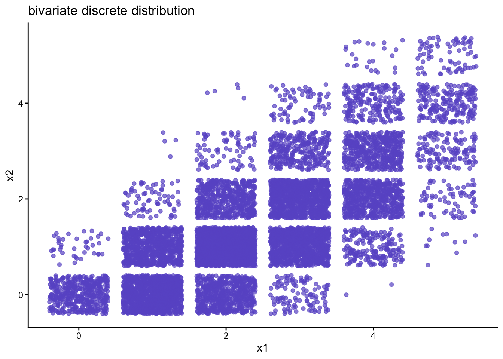
Plot the distribution of the margins:
db %>%
pivot_longer(cols = x1:x2) %>%
group_by(name, value) %>%
summarise(n = n()) %>%
group_by(name) %>%
mutate(pc = n / sum(n)) %>%
ggplot(aes(x = value, y = pc)) +
geom_bar(stat="identity", fill="slateblue") +
scale_x_continuous(breaks = 0:8) +
scale_y_continuous(labels = scales::percent) +
geom_text(
aes(label=scales::percent(pc, accuracy = 1)),
vjust = -0.2, size=3
) +
facet_wrap(~name) +
labs(title = "bivariate discrete: marginal observed frequencies")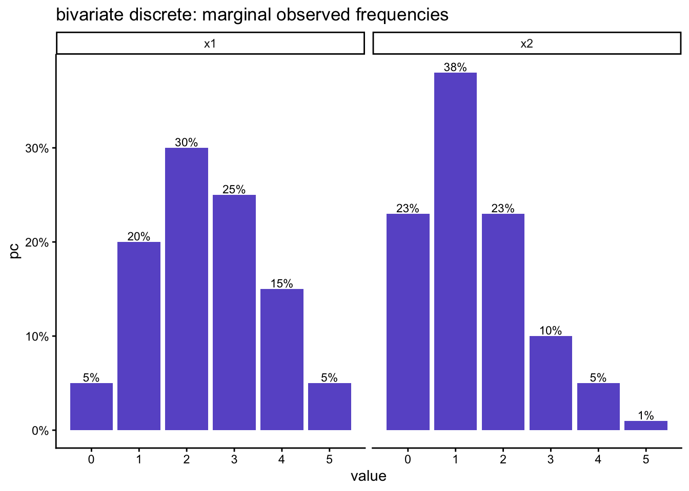
Now we have a bivariate discrete distribution with a given correlation. Let’s say this is our observed distribution that we want to recreate with a Gaussian copula.
We can proceed in the usual way to create our simulated dataset if all we are given are the marginal distributions and a correlation matrix. As the margins are not zero-inflated, I’m just going to use the observed Spearman correlation rather than the Tetrachoric correlation.
actual_distr <- db %>%
pivot_longer(all_of(names)) %>%
group_by(name, value) %>%
summarise(n = n()) %>%
group_by(name) %>%
mutate(
name = factor(name, levels = names),
pc = n / sum(n),
cumpc = cumsum(pc)
)
head(actual_distr)# A tibble: 6 × 5
# Groups: name [1]
name value n pc cumpc
<fct> <dbl> <int> <dbl> <dbl>
1 x1 0 500 0.05 0.05
2 x1 1 2000 0.2 0.25
3 x1 2 3000 0.3 0.55
4 x1 3 2500 0.25 0.8
5 x1 4 1500 0.15 0.95
6 x1 5 500 0.05 1 observed_corr <- cor(db, method = "spearman")
simdata <- rmvnorm(
n = sample_size,
mean = rep(0, nrow(observed_corr)),
sigma = observed_corr
)
summary(simdata[1:5,]) V1 V2
Min. :-2.85103 Min. :-2.7641
1st Qu.: 0.13997 1st Qu.:-0.9640
Median : 0.53494 Median : 0.2615
Mean :-0.05106 Mean :-0.2193
3rd Qu.: 0.63108 3rd Qu.: 0.8862
Max. : 1.28975 Max. : 1.4837 The result of the simulation is a random sample where the margins are \(N(0,1)\) and the correlation is the Spearman correlation of the observed dataset.
Next we map the cumulative distributions of these normal margins to the observed marginal cumulative distributions.
# make copy so we can replace each column with their corrected values:
sim_copy <- simdata
for (i in 1:length(names)) {
s <- sim_copy[, i]
actual_var_distr <- actual_distr %>%
filter(name == names[i])
# Find the critical values so we can map the simulated values to these probabilities:
crv = as.vector(c(min(s), quantile(s, actual_var_distr$cumpc)))
# Cut the simulated normal data according to the breaks given by the crv table:
temp <- cut(
s,
right = TRUE,
include.lowest = TRUE,
breaks = crv,
labels = actual_var_distr$value
)
# Convert the levels back to numeric values:
sim_temp <-
data.frame(value = as.numeric(as.character(temp)))
# if by bad luck we have an NA, this may be to do with rounding of the crv...
# => replace with the max value:
sim_temp[is.na(sim_temp)] <- max(actual_var_distr$value, na.rm = TRUE)
# transform these levels back into our values:
sim_copy[, i] <- sim_temp$value
}
sim_db <- as.data.frame(sim_copy)
names(sim_db) <- names
head(sim_db) x1 x2
1 3 2
2 3 1
3 4 3
4 2 0
5 0 0
6 3 2Compare simulated margins with actual margins:
rbind(
actual_distr %>%
select(name, value, pc) %>%
mutate(source = "actual"),
sim_db %>%
pivot_longer(x1:x2) %>%
count(name, value) %>%
group_by(name) %>%
mutate(pc = n / sum(n)) %>%
select(name, value, pc) %>%
mutate(source = "sim")
) %>%
ggplot(aes(x = value, y = pc, fill = source)) +
geom_bar(stat="identity", position = "dodge") +
facet_wrap(~name) +
scale_fill_manual(values = c("slateblue", "lightpink")) +
scale_x_continuous(breaks = 0:8) +
scale_y_continuous(labels = scales::percent) +
geom_text(
aes(label=scales::percent(pc, accuracy = 1), group = source),
position = position_dodge(width = 0.8),
vjust = -0.2, size = 2.5) +
labs(title = "observed vs simulated frequencies") +
theme(legend.position = "bottom")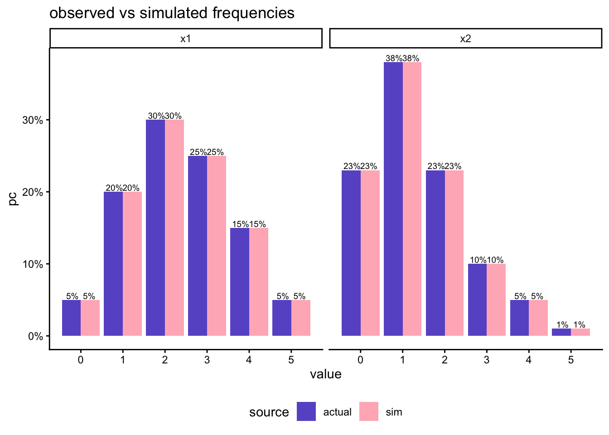
=> the margins are an exact match as expected.
Now to get \(P(X_1 \in [2,3], X_2 \in [2,3])\) we can use the simulation:
sim_db %>%
summarise(pc = sum(x1 >= 2 & x1 <= 3 & x2 >= 2 & x2 <= 3) / nrow(sim_db)) pc
1 0.1968or we can use the multivariate equivalent of pnorm, i.e. mvtnorm::pmvnorm which needs as arguments the lower and upper limits of the region of interest on the margins of the multivariate cumulative distribution.
thresholds <- data.frame(
name = c("x1", "x2"),
lower_value = c(2,2),
upper_value = c(3,3)
)
thresholds name lower_value upper_value
1 x1 2 3
2 x2 2 3Find the observed cumulative % corresponding to the lower and upper values:
quantile_bounds <- actual_distr %>%
mutate(lead_value = lead(value)) %>%
inner_join(
thresholds,
by = "name"
) %>%
filter(
# we need the x value of the actual_distr that is just before the x value
# corresponding to the lower_value:
lead_value >= lower_value,
value <= upper_value
) %>%
group_by(name, lower_value, upper_value) %>%
summarise(
lower_cumpc = min(cumpc),
upper_cumpc = max(cumpc)
) %>%
mutate(
lower_cumpc = ifelse(lower_value <= 0, 0, lower_cumpc)
)
quantile_bounds# A tibble: 2 × 5
# Groups: name, lower_value [2]
name lower_value upper_value lower_cumpc upper_cumpc
<chr> <dbl> <dbl> <dbl> <dbl>
1 x1 2 3 0.25 0.8
2 x2 2 3 0.61 0.94We now have different bounds of the cumulative distribution for \(X_1\) vs \(X_2\).
These bounds from the discrete cumulative distributions have to be converted to their corresponding quantiles on \(N(0,1)\) using the qnorm function:
quantile_bounds <- quantile_bounds %>%
mutate(
lower_phi_quantile = qnorm(lower_cumpc),
upper_phi_quantile = qnorm(upper_cumpc)
)
quantile_bounds# A tibble: 2 × 7
# Groups: name, lower_value [2]
name lower_value upper_value lower_cumpc upper_cumpc lower_phi_quantile
<chr> <dbl> <dbl> <dbl> <dbl> <dbl>
1 x1 2 3 0.25 0.8 -0.674
2 x2 2 3 0.61 0.94 0.279
# ℹ 1 more variable: upper_phi_quantile <dbl>To understand what we’re doing, let’s create the corresponding plots for \(X_1\):
x1_quantile_bounds <- quantile_bounds %>%
filter(name == "x1")
x1_actual_distr <- actual_distr %>%
filter(name == "x1")
# extend observed cumulative distribution so that F(X) starts at zero:
x <- c(-1, x1_actual_distr$value)
y <- c(0, x1_actual_distr$cumpc)
# observed cumulative distribution:
p1 <- data.frame(x, y) %>%
ggplot(aes(x = x, y = y)) +
geom_step(col = "hotpink") +
expand_limits(y = 0) +
geom_vline(xintercept = 8, col = "lightgray") +
geom_hline(yintercept = 1, col = "lightgray") +
# lower quantile:
annotate("segment",
x = -1,
y = x1_quantile_bounds$lower_cumpc,
xend = x1_quantile_bounds$lower_value - 1,
yend = x1_quantile_bounds$lower_cumpc,
arrow = arrow(ends = "first"),
linewidth = 0.5, color = "darkorange") +
annotate("segment",
x = x1_quantile_bounds$lower_value - 1,
y = x1_quantile_bounds$lower_cumpc,
xend = x1_quantile_bounds$lower_value - 1,
yend = 0,
linewidth = 0.5, color = "darkorange") +
# upper quantile
annotate("segment",
x = -1,
y = x1_quantile_bounds$upper_cumpc,
xend = x1_quantile_bounds$upper_value ,
yend = x1_quantile_bounds$upper_cumpc,
arrow = arrow(ends = "first"),
linewidth = 0.5, color = "darkorange") +
annotate("segment",
x = x1_quantile_bounds$upper_value ,
y = x1_quantile_bounds$upper_cumpc,
xend = x1_quantile_bounds$upper_value ,
yend = 0,
linewidth = 0.5, color = "darkorange") +
scale_x_continuous(breaks = c(1, 3)) +
scale_y_continuous(breaks = c(x1_quantile_bounds$lower_cumpc,
x1_quantile_bounds$upper_cumpc)) +
labs(
title = "observed cumulative distribution",
x = TeX("$x = F^{-1}(p)$"),
y = TeX("$p=F(X)$")
) +
theme(plot.title = element_text(size=10))
# normal cumulative distribution:
set.seed(13)
p2 <- data.frame(x = rnorm(n = 1000)) %>%
mutate(y = pnorm(x)) %>%
ggplot(aes(x = x, y = y, group = 1)) +
geom_line(col = "hotpink") +
geom_vline(xintercept = 3, col = "lightgray") +
geom_hline(yintercept = 1, col = "lightgray") +
# lower quantile:
annotate("segment",
x = -3,
y = x1_quantile_bounds$lower_cumpc,
xend = x1_quantile_bounds$lower_phi_quantile,
yend = x1_quantile_bounds$lower_cumpc,
linewidth = 0.5, color = "darkorange") +
annotate("segment",
x = x1_quantile_bounds$lower_phi_quantile,
y = x1_quantile_bounds$lower_cumpc,
xend = x1_quantile_bounds$lower_phi_quantile,
yend = 0,
arrow = arrow(),
linewidth = 0.5, color = "darkorange") +
# upper quantile
annotate("segment",
x = -3,
y = x1_quantile_bounds$upper_cumpc,
xend = x1_quantile_bounds$upper_phi_quantile,
yend = x1_quantile_bounds$upper_cumpc,
linewidth = 0.5, color = "darkorange") +
annotate("segment",
x = x1_quantile_bounds$upper_phi_quantile,
y = x1_quantile_bounds$upper_cumpc,
xend = x1_quantile_bounds$upper_phi_quantile,
yend = 0,
arrow = arrow(),
linewidth = 0.5, color = "darkorange") +
scale_x_continuous(breaks = round(c(x1_quantile_bounds$lower_phi_quantile,
x1_quantile_bounds$upper_phi_quantile),
digits = 3)) +
scale_y_continuous(breaks = c(x1_quantile_bounds$lower_cumpc,
x1_quantile_bounds$upper_cumpc)) +
labs(
title = "Normal cumulative distribution",
x = TeX("$x = \\Phi^{-1}(p)$"),
y = TeX("$p=\\Phi(X)$")
) +
theme(plot.title = element_text(size=10))
p1 + p2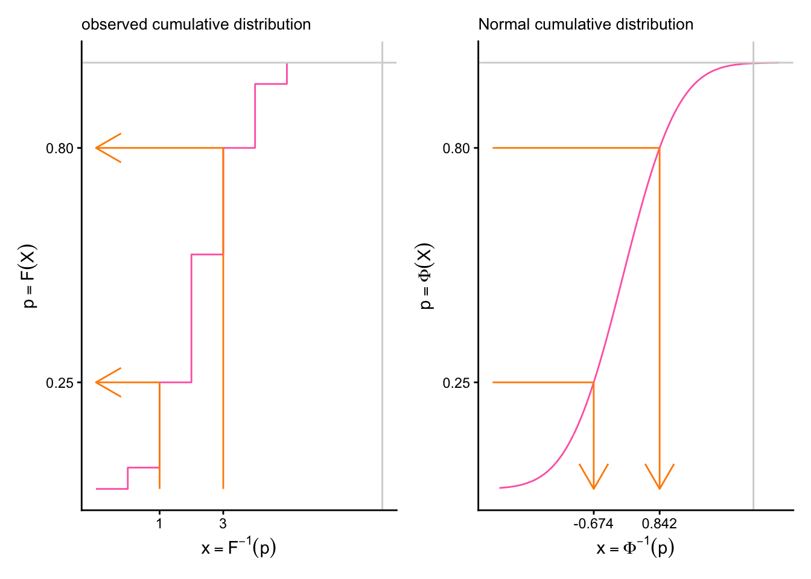
For \(X_1\) we want to find the cumulative % in the observed distribution such that we are in the region where \(X_1 \in [1,3]\). These are the y values \((0.25, 0.80)\) on the left hand side. We then have to find their corresponding quantiles on \(N(0,1)\) using the qnorm function. These are \((-0.674, 0.842)\) (see the x values on the plot on the right), and they define the quantile region of the first margin in our cumulative multivariate normal.
Doing the same exercise with \(X_2\) gives the quantile values \((0.279, 1.55)\) on \(N(0,1)\) and we can plug them in mvtnorm::pmvnorm along with our observed Spearman correlation:
region_prob <- pmvnorm(
lower = quantile_bounds$lower_phi_quantile,
upper = quantile_bounds$upper_phi_quantile,
mean = rep(0, length(names)),
corr = observed_corr
)
region_prob[1][1] 0.1969595This is the same result we found with the simulated dataset: \(P(X_1 \in [2,3], X_2 \in [2,3]) = 19.7\%\)
Let’s put this into a function and compare actual, simulated and pmvnorm results for all possible pairs of values:
deduplicated_reach_fc <- function(thresholds, actual_distr, sigma){
#' Calculate the probability of being in a region
#' for example the joint probability that variable 1 is between 1 and 5
#' and variable 2 is between 2 and 3:
#' P(1 < X1 <= 5, 2 < X2 <= 3)
#'
#' @param thresholds dataframe with the columns name, lower_value, upper_value
#' @param actual_distr dataframe with the columns name, value, pc and cumpc.
#' @param sigma named matrix of the correlation between variables.
#' @return expected probability.
# get the names of the vehicles in the plan:
my_vars <- thresholds %>%
count(name) %>%
pull(name)
# get the corresponding correlation matrix:
my_corr <- sigma[my_vars, my_vars]
# find the observed quantiles corresponding to the lower and upper values:
quantile_bounds <- actual_distr %>%
group_by(name) %>%
mutate(
max_value = max(value),
lead_value = lead(value)
) %>%
inner_join(
thresholds,
by = "name"
) %>%
filter(
# we need the x value of the actual_distr that is just before the x value
# corresponding to the lower_value:
lead_value >= lower_value,
value <= upper_value
) %>%
group_by(name, lower_value, upper_value, max_value) %>%
summarise(
lower_cumpc = min(cumpc),
upper_cumpc = max(cumpc)
) %>%
mutate(
lower_cumpc = ifelse(lower_value <= 0, 0, lower_cumpc),
upper_cumpc = ifelse(upper_value >= max_value, 1, upper_cumpc)
) %>%
# find the corresponding quantiles in N(0,1):
mutate(
lower_phi_quantile = qnorm(lower_cumpc),
upper_phi_quantile = qnorm(upper_cumpc)
)
region_prob <- pmvnorm(
lower = quantile_bounds$lower_phi_quantile,
upper = quantile_bounds$upper_phi_quantile,
mean = rep(0, length(my_vars)),
corr = my_corr
)
return(region_prob[1])
}
# test with the example P(2 <= x1 <= 3, 2 <= x1 <= 3):
thresholds <- data.frame(
name = c("x1", "x2"),
lower_value = c(2, 2),
upper_value = c(3, 3)
)
result <- deduplicated_reach_fc(thresholds, actual_distr, sigma = observed_corr)
result[1] 0.1969595Now for all possible combinations of \(X_1, X_2\):
actual_pairs_pc <- db %>%
count(x1, x2) %>%
mutate(
pc = n / sum(n),
source = "actual"
)
head(actual_pairs_pc) x1 x2 n pc source
1 0 0 460 0.0460 actual
2 0 1 40 0.0040 actual
3 1 0 1115 0.1115 actual
4 1 1 808 0.0808 actual
5 1 2 73 0.0073 actual
6 1 3 4 0.0004 actualSame using the simulated dataset:
my_list <- list()
for(i in 1:nrow(actual_pairs_pc)){
result <- sim_db %>%
summarise(pc = sum(
x1 >= actual_pairs_pc[i,1]
& x1 <= actual_pairs_pc[i,1]
& x2 >= actual_pairs_pc[i,2]
& x2 <= actual_pairs_pc[i,2]
) / nrow(sim_db))
my_list[[i]] <- data.frame(
x1 = actual_pairs_pc[i,1],
x2 = actual_pairs_pc[i,2],
pc = result
)
}
sim_pairs_pc <- bind_rows(my_list) %>%
mutate(source = "sim")
head(sim_pairs_pc) x1 x2 pc source
1 0 0 0.0423 sim
2 0 1 0.0074 sim
3 1 0 0.1057 sim
4 1 1 0.0806 sim
5 1 2 0.0128 sim
6 1 3 0.0008 simSame using pmvnorm:
my_list <- list()
for(i in 1:nrow(actual_pairs_pc)){
thresholds <- data.frame(
name = c("x1", "x2"),
lower_value = c(actual_pairs_pc[i,1], actual_pairs_pc[i,2])
) %>%
mutate(upper_value = lower_value)
result <- deduplicated_reach_fc(
thresholds,
actual_distr,
sigma = observed_corr
)
my_list[[i]] <- data.frame(
x1 = actual_pairs_pc[i,1],
x2 = actual_pairs_pc[i,2],
pc = result
)
}
pmvnorm_pairs_pc <- bind_rows(my_list) %>%
mutate(source = "pmvnorm")
head(pmvnorm_pairs_pc) x1 x2 pc source
1 0 0 0.042811875 pmvnorm
2 0 1 0.006879635 pmvnorm
3 1 0 0.105379907 pmvnorm
4 1 1 0.081525202 pmvnorm
5 1 2 0.011951785 pmvnorm
6 1 3 0.001056504 pmvnormCompare actual and sim:
rbind(
actual_pairs_pc %>% select(-n),
sim_pairs_pc
) %>%
pivot_wider(names_from = source, values_from = pc) %>%
ggplot(aes(x = actual, y = sim)) +
geom_point(col = "slateblue") +
geom_abline(intercept = 0, slope = 1, linetype = "dashed", col = "lightgrey") +
scale_x_continuous(labels = scales::percent) +
scale_y_continuous(labels = scales::percent) +
labs(title = "actual vs simulated pairs of values")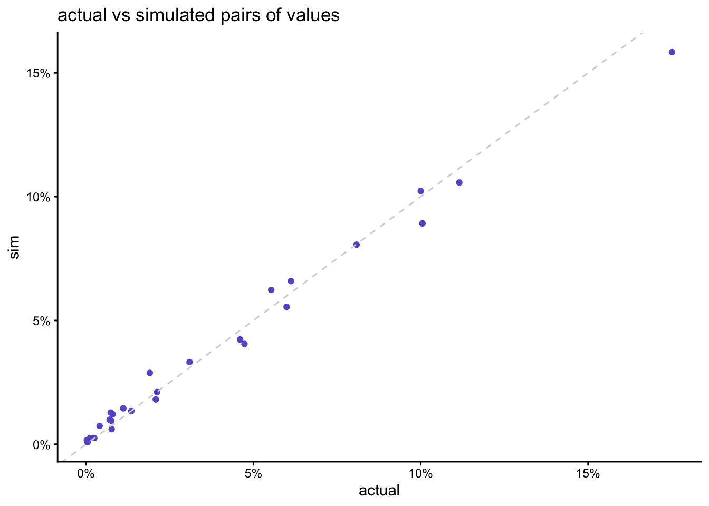
Actual and simulated values for \(P(X_1 = k_1, X_2 = k_2)\) are very close.
Compare sim and pmvnorm:
rbind(
sim_pairs_pc,
pmvnorm_pairs_pc
) %>%
pivot_wider(names_from = source, values_from = pc) %>%
ggplot(aes(x = sim, y = pmvnorm)) +
geom_point(col = "maroon") +
geom_abline(intercept = 0, slope = 1, linetype = "dashed", col = "lightgrey") +
scale_x_continuous(labels = scales::percent) +
scale_y_continuous(labels = scales::percent) +
labs(title = "pmvnorm vs simulated pairs of values")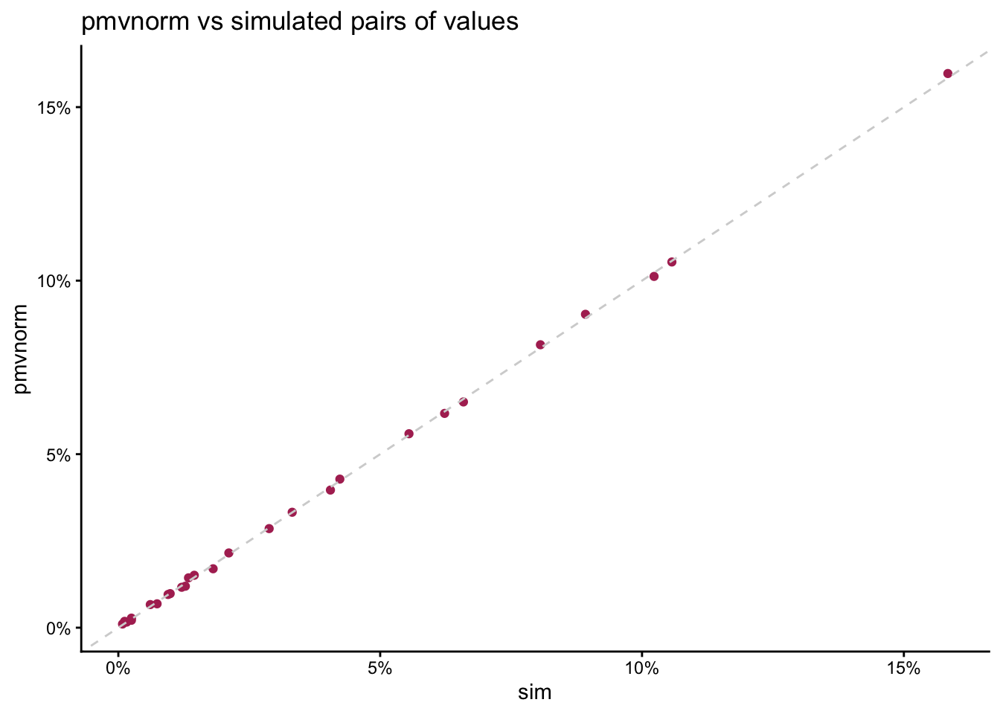
Simulated values and values derived from pmvnorm for \(P(X_1 = k_1, X_2 = k_2)\) are basically the same.
3 Bacon and eggs
Now we can use the same approach with a real dataset, showing the number of times out of four shopping trips when bacon is purchased, and similarly for eggs, see (Bell and Lattin 1998).
The data is a simple frequency table of 548 shopping trips:
freqs <- c(
254,34,8,0,1,
115,29,8,0,1,
42,16,3,4,1,
13,6,3,1,0,
6,1,1,1,0
)
bef <-
cbind(
expand.grid(
bacon = 0:4,
eggs = 0:4
),
freqs)
head(bef) bacon eggs freqs
1 0 0 254
2 1 0 34
3 2 0 8
4 3 0 0
5 4 0 1
6 0 1 115Expand the dataset so we get one row per shopping trip:
db <- bef %>%
uncount(freqs) %>%
mutate(id = row_number())
summary(db) bacon eggs id
Min. :0.0000 Min. :0.0000 Min. : 1.0
1st Qu.:0.0000 1st Qu.:0.0000 1st Qu.:137.8
Median :0.0000 Median :0.0000 Median :274.5
Mean :0.2956 Mean :0.7117 Mean :274.5
3rd Qu.:0.0000 3rd Qu.:1.0000 3rd Qu.:411.2
Max. :4.0000 Max. :4.0000 Max. :548.0 cor(db[-3]) bacon eggs
bacon 1.0000000 0.2332799
eggs 0.2332799 1.0000000First we keep a record of the margins for each product:
products <- names(db)[1:2]
actual_distr <- db %>%
pivot_longer(all_of(products)) %>%
group_by(name, value) %>%
summarise(n = n()) %>%
group_by(name) %>%
mutate(
name = factor(name, levels = products),
pc = n / sum(n),
cumpc = cumsum(pc)
)
head(actual_distr)# A tibble: 6 × 5
# Groups: name [2]
name value n pc cumpc
<fct> <int> <int> <dbl> <dbl>
1 bacon 0 430 0.785 0.785
2 bacon 1 86 0.157 0.942
3 bacon 2 23 0.0420 0.984
4 bacon 3 6 0.0109 0.995
5 bacon 4 3 0.00547 1
6 eggs 0 297 0.542 0.542actual_distr %>%
ggplot(aes(x = value, y = pc, fill = name)) +
geom_bar(stat = "identity") +
geom_text(vjust = -0.2, size=3, aes(label=scales::percent(pc, accuracy = 1))) +
facet_wrap(~name) +
scale_y_continuous(labels = scales::percent) +
theme(legend.position = "none") +
labs(title = "bacon and eggs: marginal distributions")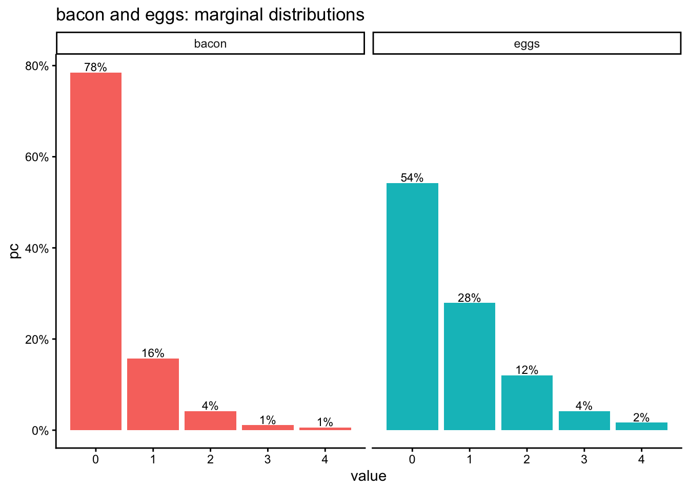
Same with the cumulative distributions:
actual_distr %>%
ggplot(aes(x = value, y = cumpc, fill = name)) +
geom_bar(stat = "identity") +
geom_text(vjust = -0.2, size=3, aes(label=scales::percent(cumpc, accuracy = 1))) +
facet_wrap(~name) +
scale_y_continuous(labels = scales::percent) +
theme(legend.position = "none") +
labs(title = "bacon and eggs: cumulative marginal distributions")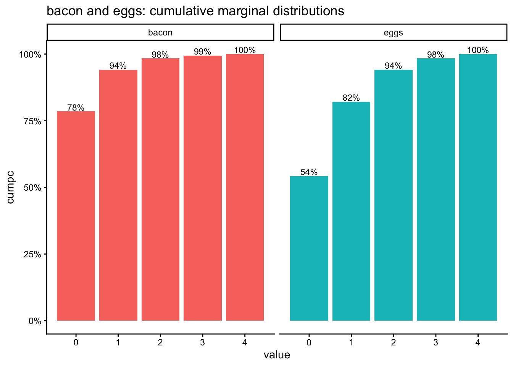
As it looks like the data (at least for bacon) has a high incidence of zero values, we will use the Tetrachoric correlation rather than the Spearman correlation.
To do this, we first calculate the Phi-coefficients, ie the correlations between the bivariate binary reach.
v1 <- products[1]
v2 <- products[2]
# transform the 1st product to binary:
x1 <- db %>%
select(!!sym(v1)) %>%
rename(v1 = !!sym(v1)) %>%
mutate(v1 = ifelse(v1 > 0, 1, 0)) %>%
pull(v1)
# transform the 2nd product to binary:
x2 <- db %>%
select(!!sym(v2)) %>%
rename(v2 = !!sym(v2)) %>%
mutate(v2 = ifelse(v2 > 0, 1, 0)) %>%
pull(v2)
# calculate the phi coefficient:
phi_coef <- cor(x1, x2)
phi_coef[1] 0.1866927Note that the phi coefficient which is based on the binary versions of the covariates is lower than the correlation which is based on the discrete values of the distributions (ranging from 0 to 4).
Using \(P(X_i=0)\) and the Phi correlation, turn into the Tetrachoric correlation:
tcc_coef <- phi2tetra(
ph = cor(x1, x2),
m = c(mean(x1), mean(x2))
)
tcc_coef[1] 0.3228499Turn into a matrix:
tcc_corr <- matrix(
data = c(1, tcc_coef, tcc_coef, 1),
byrow = TRUE,
nrow = 2,
dimnames = list(products, products)
)
tcc_corr bacon eggs
bacon 1.0000000 0.3228499
eggs 0.3228499 1.0000000Rather than running a simulation, we can use the cumulative distribution of the multivariate normal to recover the multivariate distribution.
Say we want to find the probability that eggs and bacon are between 1 and 2 units:
\(P( 1 \leq X_1 \leq 2, 1 \leq X_2 \leq 2)\):
thresholds <- data.frame(
name = c("eggs", "bacon"),
lower_value = c(1, 1),
upper_value = c(2, 2)
)
thresholds name lower_value upper_value
1 eggs 1 2
2 bacon 1 2As the observed distribution is discrete, we have to take the lead value as the lower bound:
actual_distr %>%
mutate(lead_value = lead(value)) %>%
filter(
name == "eggs",
# we need the x value before the x value corresponding to the lower_value:
lead_value >= 1,
value <= 2
)# A tibble: 3 × 6
# Groups: name [1]
name value n pc cumpc lead_value
<fct> <int> <int> <dbl> <dbl> <int>
1 eggs 0 297 0.542 0.542 1
2 eggs 1 153 0.279 0.821 2
3 eggs 2 66 0.120 0.942 3=> for eggs, we’ll need to look at the region of the cumulative distribution between [0.542, 0.942].
Find the corresponding empirical quantiles for these lower and upper values:
quantile_bounds <- actual_distr %>%
group_by(name) %>%
mutate(
max_value = max(value),
lead_value = lead(value)
) %>%
inner_join(
thresholds,
by = "name"
) %>%
filter(
# we need the x value before the x value corresponding to the lower_value:
lead_value >= lower_value,
value <= upper_value
) %>%
group_by(name, lower_value, upper_value, max_value) %>%
summarise(
lower_cumpc = min(cumpc),
upper_cumpc = max(cumpc)
) %>%
mutate(
lower_cumpc = ifelse(lower_value <= 0, 0, lower_cumpc),
upper_cumpc = ifelse(upper_value >= max_value, 1, upper_cumpc)
) %>%
mutate(
lower_phi_quantile = qnorm(lower_cumpc),
upper_phi_quantile = qnorm(upper_cumpc)
)
quantile_bounds# A tibble: 2 × 8
# Groups: name, lower_value, upper_value [2]
name lower_value upper_value max_value lower_cumpc upper_cumpc
<chr> <dbl> <dbl> <int> <dbl> <dbl>
1 bacon 1 2 4 0.785 0.984
2 eggs 1 2 4 0.542 0.942
# ℹ 2 more variables: lower_phi_quantile <dbl>, upper_phi_quantile <dbl>Then using mvtnorm:pmvnorm we can get the probability corresponding to the relevant region:
region_prob <- pmvnorm(
lower = quantile_bounds$lower_phi_quantile,
upper = quantile_bounds$upper_phi_quantile,
mean = rep(0, length(products)),
corr = tcc_corr
)
region_prob[1][1] 0.1020068Compare with actual:
rbind(
db %>%
filter(
bacon >= 1, bacon <= 2,
eggs >= 1, eggs <= 2
) %>%
summarise(reach_pc = n() / nrow(db)) %>%
mutate(source = "actual"),
data.frame(
reach_pc = region_prob[1],
source = "pmvnorm"
)
) reach_pc source
1 0.1021898 actual
2 0.1020068 pmvnorm=> pmvnorm matches the actual value for \(P( 1 \leq X_1 \leq 2, 1 \leq X_2 \leq 2)\).
We can also get this result using the deduplicated_reach_fc function defined in section 2:
result <- deduplicated_reach_fc(thresholds, actual_distr, sigma = tcc_corr)
result[1] 0.1020068To get the combined null reach \(p_{00} = P(X_1 =0, X_2 = 0)\):
thresholds <- data.frame(
name = c("eggs", "bacon"),
lower_value = c(-Inf, -Inf),
upper_value = c(0, 0)
)
p_00 <- deduplicated_reach_fc(thresholds, actual_distr, tcc_corr)
p_00[1] 0.4635024and then the combined reach is \(1-p_{00}\):
rbind(
db %>%
summarise(cross_reach_pc = sum( (bacon + eggs) > 0 ) / nrow(db)) %>%
mutate(source = "actual"),
data.frame(
cross_reach_pc = 1 - p_00,
source = "pmvnorm"
)
) cross_reach_pc source
1 0.5364964 actual
2 0.5364976 pmvnormNow for all possible combinations:
actual_pairs_pc <- db %>%
count(bacon, eggs) %>%
mutate(
pc = n / sum(n),
source = "actual"
)
head(actual_pairs_pc) bacon eggs n pc source
1 0 0 254 0.46350365 actual
2 0 1 115 0.20985401 actual
3 0 2 42 0.07664234 actual
4 0 3 13 0.02372263 actual
5 0 4 6 0.01094891 actual
6 1 0 34 0.06204380 actualSame using pmvnorm:
my_list <- list()
for(i in 1:nrow(actual_pairs_pc)){
thresholds <- data.frame(
name = c("bacon", "eggs"),
lower_value = c(actual_pairs_pc[i,1], actual_pairs_pc[i,2])
) %>%
mutate(upper_value = lower_value)
result <- deduplicated_reach_fc(
thresholds,
actual_distr,
sigma = tcc_corr
)
my_list[[i]] <- data.frame(
bacon = actual_pairs_pc[i,1],
eggs = actual_pairs_pc[i,2],
pc = result
)
}
pmvnorm_pairs_pc <- bind_rows(my_list) %>%
mutate(source = "pmvnorm")
head(pmvnorm_pairs_pc) bacon eggs pc source
1 0 0 0.463502380 pmvnorm
2 0 1 0.208566981 pmvnorm
3 0 2 0.079907864 pmvnorm
4 0 3 0.024594517 pmvnorm
5 0 4 0.008099791 pmvnorm
6 1 0 0.061762385 pmvnormCompare actual and pmvnorm:
compare <- rbind(
actual_pairs_pc %>% select(-n),
pmvnorm_pairs_pc
) %>%
pivot_wider(names_from = source, values_from = pc)
head(compare)# A tibble: 6 × 4
bacon eggs actual pmvnorm
<int> <int> <dbl> <dbl>
1 0 0 0.464 0.464
2 0 1 0.210 0.209
3 0 2 0.0766 0.0799
4 0 3 0.0237 0.0246
5 0 4 0.0109 0.00810
6 1 0 0.0620 0.0618 compare %>%
ggplot(aes(x = actual, y = pmvnorm)) +
geom_point(col = "maroon") +
geom_abline(intercept = 0, slope = 1, linetype = "dashed", col = "lightgrey") +
scale_x_continuous(labels = scales::percent) +
scale_y_continuous(labels = scales::percent) +
labs(title = "actual vs pmvnorm pairs of values")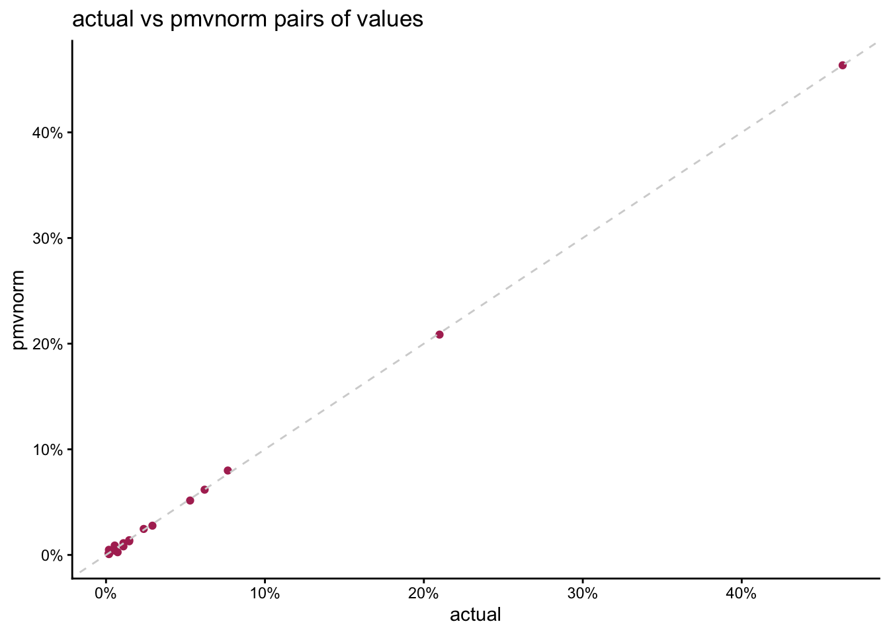
It works!
For a better view of how close the results from pmvnorm are to the actual values, we can look at the log values:
compare %>%
ggplot(aes(x = log(actual), y = log(pmvnorm))) +
geom_point(col = "maroon") +
geom_abline(intercept = 0, slope = 1, linetype = "dashed", col = "lightgrey") +
labs(title = "actual vs pmvnorm pairs of log values")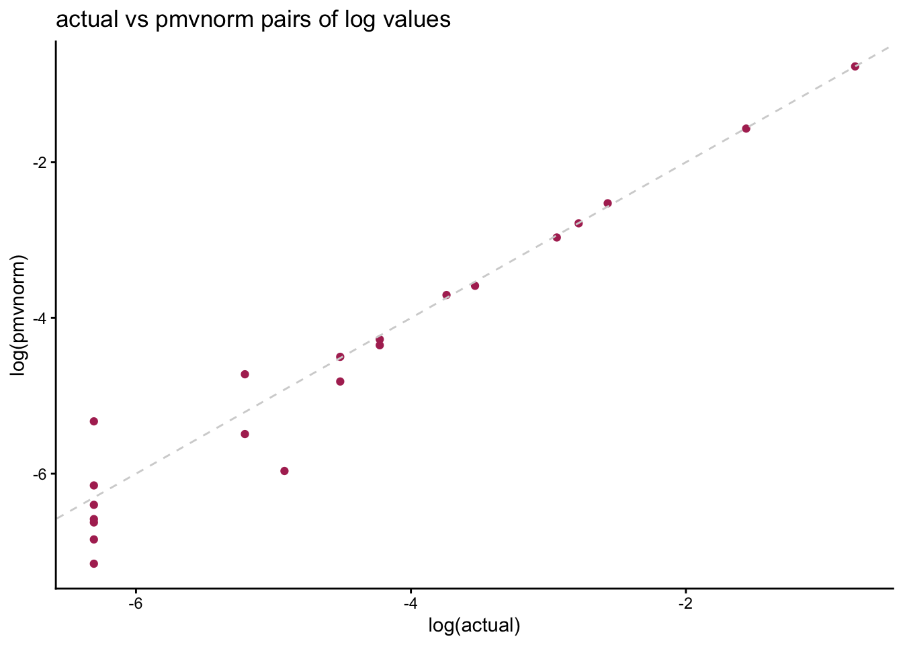
Let’s zoom in on the values where actual is one value but pmvnorm gives different values:
compare %>%
mutate(log_actual = log(actual)) %>%
filter(log_actual < -6) %>%
inner_join(bef, by = c("bacon", "eggs"))# A tibble: 7 × 6
bacon eggs actual pmvnorm log_actual freqs
<int> <int> <dbl> <dbl> <dbl> <dbl>
1 1 4 0.00182 0.00485 -6.31 1
2 2 4 0.00182 0.00213 -6.31 1
3 3 3 0.00182 0.00133 -6.31 1
4 3 4 0.00182 0.000780 -6.31 1
5 4 0 0.00182 0.00107 -6.31 1
6 4 1 0.00182 0.00166 -6.31 1
7 4 2 0.00182 0.00138 -6.31 1=> they all have the same % in the actual dataset because their frequency is just 1. Although pmvnorm gives different values they are so small (all < 0.5%) it doesn’t make any material difference.
In the context of an advertising campaign, we could imagine that the products are in fact channels, and the values are the number of impacts. Then the reach and frequency of the campaign would be fully defined by just summing values across the products:
compare %>%
pivot_longer(actual:pmvnorm, names_to = "source") %>%
mutate(impacts = bacon + eggs) %>%
group_by(source, impacts) %>%
summarise(pc = sum(value)) %>%
ggplot(aes(x = impacts, y = pc, fill = source)) +
geom_bar(stat="identity", position = "dodge") +
scale_fill_manual(values = c("slateblue", "lightpink")) +
scale_x_continuous(breaks = 0:8) +
scale_y_continuous(labels = scales::percent) +
geom_text(
aes(label=scales::percent(pc, accuracy = 1, fill = source)),
position = position_dodge(width = 0.8),
vjust = -0.2, size = 2.5) +
labs(title = "actual vs pmvorm frequencies") +
theme(legend.position = "bottom")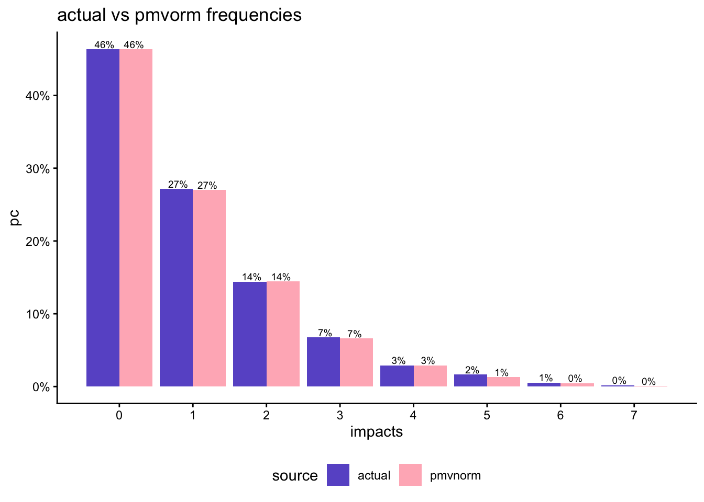
The full distribution of the number of products bought is perfectly preserved.
4 Conclusion
In this post we saw that given just their marginal distributions and a correlation matrix we can recover the entire reach and frequency distribution of a multivariate dataset using the appropriate bounds of the multivariate normal cumulative distribution. This approach is an elegant and stable alternative to creating a simulated dataset.
In the context of cross media measurement, it can be used to estimate the cross media reach using the industry standard measurement for each media (i.e. the media currencies), and a correlation matrix from a separate single-source study.
References
Bell, D. R., and J. M. Lattin. 1998. “Shopping Behavior and Consumer Preferences for Store Price Format: Why ’Large Basket’ Shoppers Prefer EDLP.” Marketing Science, Vol. 17, 66–88. https://doi.org/10.1287/MKSC.17.1.66.
Genz, A. 1992. “Numerical Computation of Multivariate Normal Probabilities.” Journal of Computational and Graphical Statistics, Vol. 1, 141–50. https://doi.org/10.1080/10618600.1992.10477010.